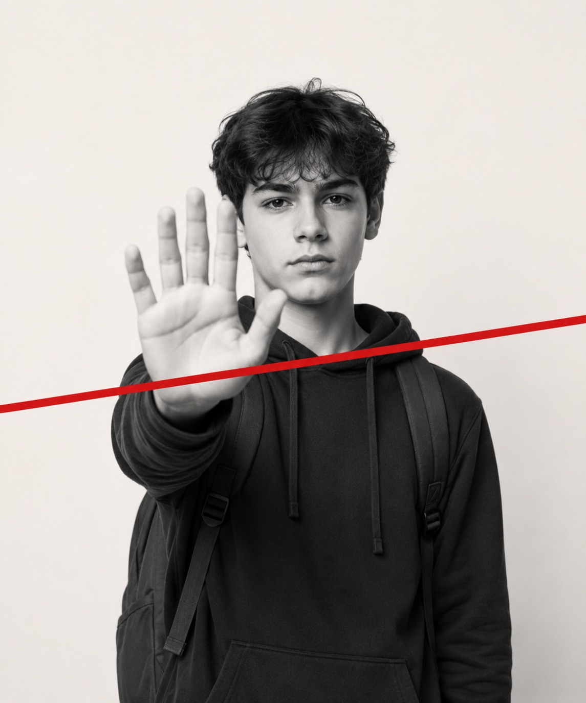
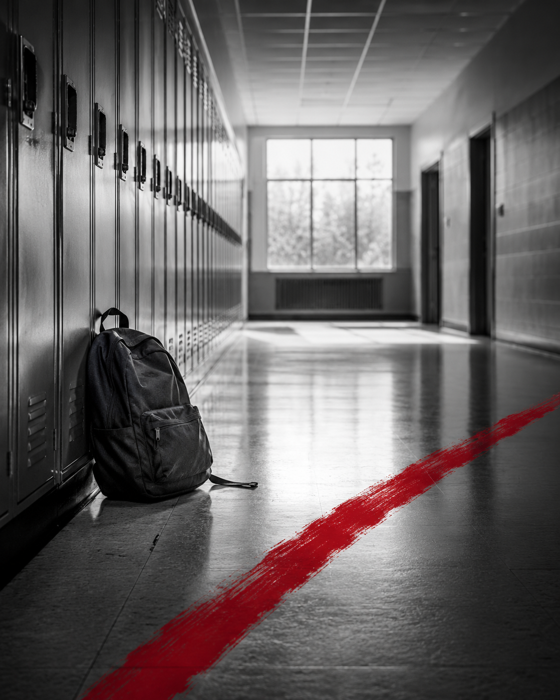

Zorbalığa tanık olma
Gençlerin büyük kısmı akran zorbalığına doğrudan ya da dolaylı olarak tanık olduğunu söylüyor.
Akran zorbalığı, siber zorbalık, dışlama, mahremiyet
Zorbalığa seyirci kalma, kırmızı çizgini çek. Senin sesin, bir başkası için güvenli alan olabilir.

Şaka mı, zorbalık mı? Senaryoları çöz, çizgini nerede çekeceğini gör.
02Öğrenci, tanık, ebeveyn ve öğretmen için ayrı destek alanları.
03Akran zorbalığına karşı uygulanabilir rehber ve güvenli adımlar.
04Başvuru metnini kopyala, sayaç artsın, CİMER’e yönlen.
Araştırma raporu

Gençlerin büyük kısmı akran zorbalığına doğrudan ya da dolaylı olarak tanık olduğunu söylüyor.
Tanıklar çoğu zaman kendisinin de hedef olacağından ya da dışlanacağından korkuyor.
“Bence burada duralım” kısa, barışçıl ve uygulanabilir bir müdahale olarak öne çıkıyor.
Destek alanları
Basın odası
Basın bültenleri, kampanya duyuruları ve iletişim metinleri ayrı bir sayfada okunabilir, kopyalanabilir ve indirilebilir şekilde yer alacak.
Bültenleri Aç